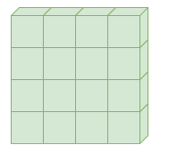
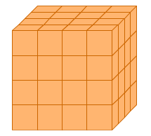
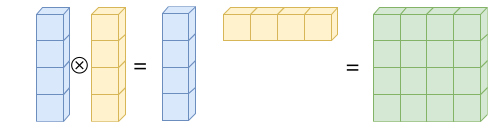
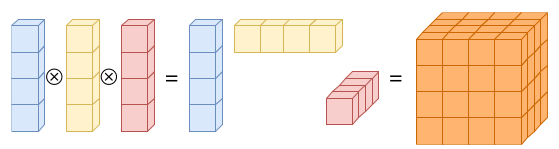
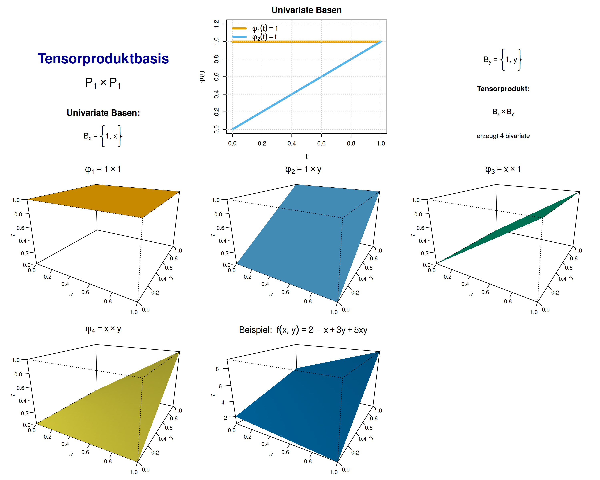
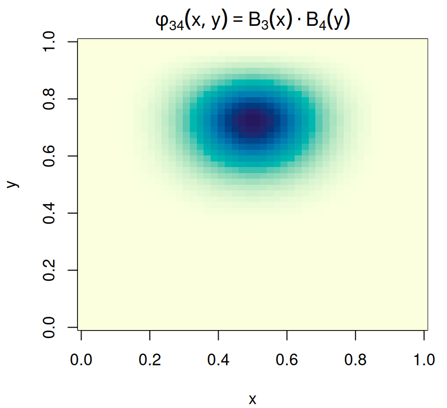
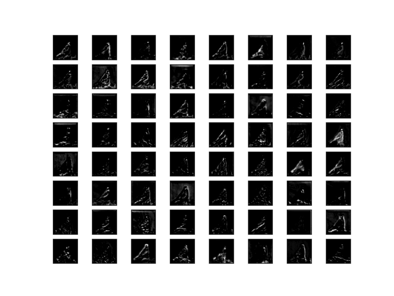

library(splines)
x <- seq(0, 1, length.out = 50)
Bx <- bs(x, df = 6) # B-Spline-Basis
By <- bs(x, df = 6)
B <- kronecker(By, Bx)
dim(B) # 2500 Gitterpunkte, 6*6 Koeffizienten[1] 2500 36Fortgeschrittene mathematische Methoden in der Statistik
fabian.scheipl@lmu.de)\[ \definecolor{fmmgreen}{RGB}{0,158,115} \definecolor{fmmblue}{RGB}{0,114,178} \definecolor{fmmred}{RGB}{213,94,0} \definecolor{fmmorange}{RGB}{230,159,0} \definecolor{fmmpurple}{RGB}{158,87,213} \newcommand{\ind}{\unicode{x1D7D9}} \newcommand{\R}{{\mathbb{R}}} \newcommand{\N}{{\mathbb{N}}} \newcommand{\Q}{{\mathbb{Q}}} \newcommand{\C}{\mathbb{C}} \newcommand{\P}{\mathbb{P}} \newcommand{\Z}{{\mathbb{Z}}} \newcommand{\E}{{\mathbb{E}}} \newcommand{\K}{{\mathbb{K}}} \newcommand{\L}{\mathbb{L}} \newcommand{\F}{{\mathbb{F}}} \newcommand{\G}{\mathbb{G}} \newcommand{\S}{\mathbb{S}} \newcommand{\D}{{\mathbb{D}}} \newcommand{\bnull}{{\boldsymbol{0}}} \newcommand{\bzero}{{\boldsymbol{0}}} \newcommand{\ba}{{\boldsymbol{a}}} \newcommand{\bb}{{\boldsymbol{b}}} \newcommand{\bc}{{\boldsymbol{c}}} \newcommand{\bd}{{\boldsymbol{d}}} \newcommand{\be}{{\boldsymbol{e}}} \newcommand{\bg}{{\boldsymbol{g}}} \newcommand{\bh}{{\boldsymbol{h}}} \newcommand{\bi}{{\boldsymbol{i}}} \newcommand{\bj}{{\boldsymbol{j}}} \newcommand{\bk}{{\boldsymbol{k}}} \newcommand{\bl}{{\boldsymbol{l}}} \newcommand{\bn}{{\boldsymbol{n}}} \newcommand{\bo}{{\boldsymbol{o}}} \newcommand{\bp}{{\boldsymbol{p}}} \newcommand{\bq}{{\boldsymbol{q}}} \newcommand{\br}{{\boldsymbol{r}}} \newcommand{\bs}{{\boldsymbol{s}}} \newcommand{\bt}{{\boldsymbol{t}}} \newcommand{\bu}{{\boldsymbol{u}}} \newcommand{\bv}{{\boldsymbol{v}}} \newcommand{\bw}{{\boldsymbol{w}}} \newcommand{\bx}{{\boldsymbol{x}}} \newcommand{\by}{{\boldsymbol{y}}} \newcommand{\bz}{{\boldsymbol{z}}} \newcommand{\bA}{{\boldsymbol{A}}} \newcommand{\bB}{{\boldsymbol{B}}} \newcommand{\bC}{{\boldsymbol{C}}} \newcommand{\bD}{{\boldsymbol{D}}} \newcommand{\bE}{{\boldsymbol{E}}} \newcommand{\bF}{{\boldsymbol{F}}} \newcommand{\bG}{{\boldsymbol{G}}} \newcommand{\bH}{{\boldsymbol{H}}} \newcommand{\bI}{{\boldsymbol{I}}} \newcommand{\bJ}{{\boldsymbol{J}}} \newcommand{\bK}{{\boldsymbol{K}}} \newcommand{\bL}{{\boldsymbol{L}}} \newcommand{\bM}{{\boldsymbol{M}}} \newcommand{\bN}{{\boldsymbol{N}}} \newcommand{\bO}{{\boldsymbol{O}}} \newcommand{\bP}{{\boldsymbol{P}}} \newcommand{\bQ}{{\boldsymbol{Q}}} \newcommand{\bR}{{\boldsymbol{R}}} \newcommand{\bS}{{\boldsymbol{S}}} \newcommand{\bT}{{\boldsymbol{T}}} \newcommand{\bU}{{\boldsymbol{U}}} \newcommand{\bV}{{\boldsymbol{V}}} \newcommand{\bW}{{\boldsymbol{W}}} \newcommand{\bX}{{\boldsymbol{X}}} \newcommand{\bY}{{\boldsymbol{Y}}} \newcommand{\bZ}{{\boldsymbol{Z}}} \newcommand{\tagqed}{\tag*{$\blacksquare$}} \newcommand{\Acal}{{\mathcal{A}}} \newcommand{\Bcal}{{\mathcal{B}}} \newcommand{\Ccal}{{\mathcal{C}}} \newcommand{\Dcal}{{\mathcal{D}}} \newcommand{\Ecal}{{\mathcal{E}}} \newcommand{\Fcal}{{\mathcal{F}}} \newcommand{\Gcal}{{\mathcal{G}}} \newcommand{\Hcal}{{\mathcal{H}}} \newcommand{\Ical}{{\mathcal{I}}} \newcommand{\Jcal}{{\mathcal{J}}} \newcommand{\Kcal}{{\mathcal{K}}} \newcommand{\Lcal}{{\mathcal{L}}} \newcommand{\Mcal}{{\mathcal{M}}} \newcommand{\Ncal}{{\mathcal{N}}} \newcommand{\Ocal}{{\mathcal{O}}} \newcommand{\Pcal}{{\mathcal{P}}} \newcommand{\Qcal}{{\mathcal{Q}}} \newcommand{\Rcal}{{\mathcal{R}}} \newcommand{\Scal}{{\mathcal{S}}} \newcommand{\Tcal}{{\mathcal{T}}} \newcommand{\Ucal}{{\mathcal{U}}} \newcommand{\Vcal}{{\mathcal{V}}} \newcommand{\Wcal}{{\mathcal{W}}} \newcommand{\Xcal}{{\mathcal{X}}} \newcommand{\Ycal}{{\mathcal{Y}}} \newcommand{\Zcal}{{\mathcal{Z}}} \newcommand{\eps}{{\varepsilon}} \newcommand{\beps}{{\boldsymbol{\epsilon}}} \newcommand{\balpha}{{\boldsymbol{\alpha}}} \newcommand{\bbeta}{{\boldsymbol{\beta}}} \newcommand{\bchi}{{\boldsymbol{\chi}}} \newcommand{\bdelta}{{\boldsymbol{\delta}}} \newcommand{\bDelta}{{\boldsymbol{\Delta}}} \newcommand{\bepsilon}{{\boldsymbol{\epsilon}}} \newcommand{\bphi}{{\boldsymbol{\phi}}} \newcommand{\bgamma}{{\boldsymbol{\gamma}}} \newcommand{\betah}{{\boldsymbol{\eta}}} \newcommand{\btheta}{{\boldsymbol{\theta}}} \newcommand{\biota}{{\boldsymbol{\iota}}} \newcommand{\bkappa}{{\boldsymbol{\kappa}}} \newcommand{\blambda}{{\boldsymbol{\lambda}}} \newcommand{\bLambda}{{\boldsymbol{\Lambda}}} \newcommand{\bmu}{{\boldsymbol{\mu}}} \newcommand{\bnu}{{\boldsymbol{\nu}}} \newcommand{\bomikron}{{\boldsymbol{\omicron}}} \newcommand{\bpi}{{\boldsymbol{\pi}}} \newcommand{\bSigma}{{\boldsymbol{\Sigma}}} \newcommand{\bxi}{{\boldsymbol{\xi}}} \newcommand{\bzeta}{{\boldsymbol{\zeta}}} \newcommand{\bomega}{{\boldsymbol{\omega}}} \newcommand{\equivto}{{\Leftrightarrow}} \newcommand{\quequiv}{{\quad \equivto \quad}} \newcommand{\impl}{{\implies}} \newcommand{\quimpl}{{\quad \implies \quad}} \newcommand{\implby}{{\impliedby}} \newcommand{\notimplies}{\not\implies} \newcommand{\tr}{{\operatorname{tr}}} \newcommand{\spann}{{\operatorname{span}}} \newcommand{\col}{{\operatorname{col}}} \newcommand{\rang}{{\operatorname{rang}}} \newcommand{\diag}{{\operatorname{diag}}} \newcommand{\vec}{\operatorname{vec}} \newcommand{\pinv}{{^{+}}} \newcommand{\kron}{\mathbin{\otimes_{\mathrm{K}}}} \newcommand{\sign}{{\operatorname{sign}}} \newcommand{\la}{{\langle}} \newcommand{\ra}{{\rangle}} \newcommand{\inner}[1]{{\langle #1 \rangle}} \newcommand{\proj}{{\operatorname{proj}}} \newcommand{\bar}{\overline} \newcommand{\vol}{{\operatorname{vol}}} \newcommand{\dx}{{\, \mathrm{d}x}} \newcommand{\ol}{{\overline}} \newcommand{\argmax}{\mathop{\mathrm{arg\,max}}} \newcommand{\argmin}{\mathop{\mathrm{arg\,min}}} \newcommand{\conv}{\mathop{\mathrm{conv}}} \newcommand{\epi}{\mathop{\mathrm{epi}}} \newcommand{\interior}{\mathop{\mathrm{int}}} \newcommand{\Pr}{\mathbb{P}} \newcommand{\var}{{\mathbb{V}\mathrm{ar}}} \newcommand{\bias}{{\operatorname{bias}}} \newcommand{\abias}{{\mathrm{ABias}}} \newcommand{\AMSE}{{\mathrm{AMSE}}} \newcommand{\AMISE}{{\mathrm{AMISE}}} \newcommand{\cov}{{\mathbb{C}\mathrm{ov}}} \newcommand{\corr}{{\mathrm{Corr}}} \newcommand{\ov}{{\overline}} \newcommand{\wh}[1]{{\widehat{#1}}} \newcommand{\wt}[1]{{\widetilde{#1}}} \newcommand{\tod}{{\stackrel{d}{\to}}} \newcommand{\sumin}{{\sum_{i = 1}^n}} \newcommand{\sumjn}{{\sum_{j = 1}^n}} \newcommand{\KL}{{\operatorname{KL}}} \newcommand{\softmax}{{\operatorname{SoftMax}}} \newcommand{\layernorm}{{\operatorname{LayerNorm}}} \newcommand{\avg}{{\operatorname{avg}}} \newcommand{\relu}{{\operatorname{ReLu}}} \newcommand{\VC}{{\operatorname{VC}}} \newcommand{\indep}{{\perp \!\!\! \perp}} \newcommand{\unif}{{\operatorname{Unif}}} \newcommand{\bern}{{\operatorname{Bernoulli}}} \newcommand{\binomial}{{\operatorname{Binomial}}} \newcommand{\MSE}{{\operatorname{MSE}}} \newcommand{\iid}{\textit{iid}\;} \newcommand{\IF}{{\operatorname{IF} }} \newcommand{\BIC}{{\operatorname{BIC}}} \newcommand{\AIC}{{\operatorname{AIC}}} \newcommand{\IC}{{\operatorname{IC}}} \newcommand{\expl}[1]{{\tag*{[#1]}}} \newcommand{\cb}[1]{\textbf{#1}} \newcommand{\cbgreen}[1]{\textcolor{fmmgreen}{\textbf{#1}}} \newcommand{\cbred}[1]{\textcolor{fmmred}{\textbf{#1}}} \newcommand{\cbpurp}[1]{\textcolor{fmmpurple}{\textbf{#1}}} \newcommand{\cborange}[1]{\textcolor{fmmorange}{\textbf{#1}}} \newcommand{\corange}[1]{{\textcolor{fmmorange}{#1}}} \newcommand{\cblue}[1]{{\textcolor{fmmblue}{#1}}} \newcommand{\cgreen}[1]{{\textcolor{fmmgreen}{#1}}} \newcommand{\cred}[1]{{\textcolor{fmmred}{#1}}} \newcommand{\cpurp}[1]{{\textcolor{fmmpurple}{#1}}} \newcommand{\symbf}[1]{\boldsymbol{#1}} \]
Def.: Multilineare Abbildung
Seien \(V_1, \dots, V_n, W\) Vektorräume. Eine multilineare Abbildung ist eine Abbildung \(f\colon V_1 \times \cdots \times V_n \to W\), sodass: \[\begin{align*} &\quad f(\bv_1, \dots, c \bv_i + c'\bv_i', \dots, \bv_n) \\ &= cf(\bv_1, \dots, \bv_i, \dots, \bv_n) + c'f(\bv_1, \dots, \bv_i', \dots, \bv_n) \end{align*}\] für alle \(i = 1, \dots, n\), \(c, c' \in \R\), \(\bv_i, \bv_i' \in V_i\) und \(\bv_\ell \in V_\ell\) (\(\ell \neq i\)).
Anmerkungen:
Fläche eines Rechtecks als Funktion seiner Seitenlängen: \[f\colon \R \times \R \to \R, \quad (x, y) \mapsto xy\]
Warum ist \(f\) nicht linear?
Aber \(f\) ist bilinear:
\[\begin{align*}
\text{$y$ konstant: } f(x_1 + x_2, y) &= (x_1 + x_2) \cdot y = x_1 y + x_2 y = f(x_1, y) + f(x_2, y)\\
f(cx, y) &= (cx) \cdot y = c(xy) = c f(x, y)\\
\text{$x$ konstant: } f(x, y_1 + y_2) &= x \cdot (y_1 + y_2) = x y_1 + x y_2 = f(x, y_1) + f(x, y_2)\\
f(x, cy) &= x \cdot (cy) = c(xy) = c f(x, y)
\end{align*}\]
\(\implies\) Die Funktion ist in jedem Argument einzeln linear!
Beispiel:
Beispiel:
Beispiel:
TRUE/FALSE?
Für jedes multilineare \(f\) gilt \(f(\bv_1, \dots, \bv_n) = \bnull\) sobald \(\bv_i = \bnull\) für ein \(i\).
Theorem
Eine Abbildung \(T \colon \R^{n_1} \times \cdots \times \R^{n_k} \to \R^m\) ist genau dann multilinear, wenn es reelle Koeffizienten \[A = (a_{i_1, \dots, i_k, j}\colon 1 \le i_1 \le n_1, \dots, 1 \le i_k \le n_k, 1 \le j \le m)\] gibt, sodass \[\begin{align*} T(\bx^{(1)}, \dots, \bx^{(k)}) = \sum_{i_1 = 1}^{n_1} \cdots \sum_{i_k = 1}^{n_k} \sum_{j = 1}^{m} a_{i_1, \dots, i_k, j} x_{i_1}^{(1)} \cdots x_{i_k}^{(k)} \be_j, \end{align*}\] wobei \(\be_j\) der \(j\)-te Einheitsvektor des \(\R^m\) ist. Die Koeffizienten \(a_{i_1, \dots, i_k, j}\) sind eindeutig.
\(T\colon \R^2 \times \R^2 \to \R\) mit \(T(\bx, \by) = 2x_1 y_1 + 3x_1 y_2 - x_2 y_1 + 4x_2 y_2\)
Koeffizienten \((a_{i_1, i_2}\colon 1 \le i_1, i_2 \le 2)\):
\(a_{1,1} = 2, \quad a_{1,2} = 3, \quad a_{2,1} = -1, \quad a_{2,2} = 4\) \(\implies \bA = \begin{pmatrix} 2 & 3 \\ -1 & 4 \end{pmatrix}\)
Verifikation:
\[\begin{align*}
T(\bx, \by) &= \sum_{i_1=1}^{2} \sum_{i_2=1}^{2} a_{i_1, i_2} x_{i_1} y_{i_2}
= a_{1,1} x_1 y_1 + a_{1,2} x_1 y_2 + a_{2,1} x_2 y_1 + a_{2,2} x_2 y_2 \\
&= 2x_1 y_1 + 3x_1 y_2 - x_2 y_1 + 4x_2 y_2 \quad ✓
\end{align*}\]
Numerisches Beispiel:
Für \(\bx = \begin{pmatrix} 1 \\ 2 \end{pmatrix}\), \(\by = \begin{pmatrix} 3 \\ 4 \end{pmatrix}\): \(T(\bx, \by) = 2 \cdot 1 \cdot 3 + 3 \cdot 1 \cdot 4 - 1 \cdot 2 \cdot 3 + 4 \cdot 2 \cdot 4 = 6 + 12 - 6 + 32 = 44\)
Alternativ in Tensorschreibweise:
\(T(\bx, \by) = \bx^\top \bA \by = \begin{pmatrix} 1 & 2 \end{pmatrix} \begin{pmatrix} 2 & 3 \\ -1 & 4 \end{pmatrix} \begin{pmatrix} 3 \\ 4 \end{pmatrix} = \begin{pmatrix} 0 & 11 \end{pmatrix} \begin{pmatrix} 3 \\ 4 \end{pmatrix} = 44\)
Def.: Tensor
Ein Tensor ist eine durch \(k\) Indizes indizierte Ansammlung von reellen Zahlen \[A = (a_{i_1, \dots, i_k}\colon 1 \le i_1 \le n_1, \dots, 1 \le i_k \le n_k) \in \R^{n_1 \times \cdots \times n_k}.\] Die Zahl \(k\) wird auch Stufe des Tensors genannt.


Eine \((4 \times 4)\)-Matrix besteht aus \(4^2 = 16\) Zahlen (links); ein \((4 \times 4 \times 4)\)-Tensor besteht aus \(4^3 = 64\) Zahlen (rechts). (Quelle: Deisenroth/Faisal/Ong, Fig 5.13)
(Details & Feature-Map-Visualisierung → Anhang)
\(\stackrel{\sim}{=}\) 3 Kanal-Matrizen \(\rightarrow\)
Def.: Äußeres Produkt
Das äußere Produkt von zwei Vektoren \(\bv \in \R^m\) und \(\bw \in \R^n\) ist definiert als \[\bv \otimes \bw := \bv \bw^\top = \begin{pmatrix} v_1 w_1 & \cdots & v_1 w_n \\ \vdots & & \vdots \\ v_m w_1 & \cdots & v_m w_n \\ \end{pmatrix} \in \R^{m \times n}.\]
Beispiel:
\[\begin{align*}
\cgreen{\bv = \begin{pmatrix}
1 \\ 2
\end{pmatrix}} \quad \mbox{und} \quad \cblue{\bw = \begin{pmatrix}
-2 \\ 3 \\ -11
\end{pmatrix}}
\end{align*}\] \[\begin{align*}
\cgreen{\bv} \otimes \cblue{\bw} = \cgreen{\bv} \cblue{\bw^\top} &= \cgreen{\begin{pmatrix}
1 \\ 2
\end{pmatrix}} \cblue{\begin{pmatrix}
-2 & 3 & -11
\end{pmatrix}} \\ &= \begin{pmatrix}
-2 & 3 & -11 \\
-4 & 6 & -22
\end{pmatrix}
\end{align*}\]
Anwendungsbeispiele:
Def.: Tensorprodukt
Das Tensorprodukt \(\otimes\colon \R^{m_1 \times \cdots \times m_p} \times \R^{n_1 \times \cdots \times n_q} \to \R^{m_1 \times \cdots \times m_p \times n_1 \times \cdots \times n_q}\) von zwei Tensoren \(\bA \in \R^{m_1 \times \cdots \times m_p}\) und \(\bB \in \R^{n_1 \times \cdots \times n_q}\) ist definiert als der Tensor \(\bC \in \R^{m_1 \times \cdots \times m_p \times n_1 \times \cdots \times n_q}\) mit \[\begin{align*} c_{i_1, \dots, i_p, j_1, \dots, j_q} = a_{i_1, \dots, i_p} b_{j_1, \dots, j_q}. \end{align*}\]


Oben: Das Produkt von zwei Stufe-1-Tensoren ergibt einen Stufe-2-Tensor. Unten: Das Produkt von drei Stufe-1-Tensoren ergibt einen Stufe-3-Tensor. Quelle: Deisenroth/Faisal/Ong, Fig 5.13
\[\cgreen{\bu = \begin{pmatrix} 1 \\ 2 \end{pmatrix}} \in \R^2, \quad \cgreen{\bv = \begin{pmatrix} 3 \\ 5 \end{pmatrix}} \in \R^2, \quad \cblue{\bw = \begin{pmatrix} 7 \\ 11 \end{pmatrix}} \in \R^2\] Tensorprodukt \(\bT = \cgreen{\bu} \otimes \cgreen{\bv} \otimes \cblue{\bw} \in \R^{2 \times 2 \times 2}\) hat Einträge \(\bT_{i,j,k} = \cgreen{u_i v_j} \cblue{w_k}\): \[\begin{align*} \text{Slice 1 ($k = 1$, also $w_k = \cblue{w_1 = 7}$): } \bT_{1,1,1} = \cgreen{1 \cdot 3} \cdot \cblue{7} = 21, \quad &\bT_{1,2,1} = \cgreen{1 \cdot 5} \cdot \cblue{7} = 35 \\ \bT_{2,1,1} = \cgreen{2 \cdot 3} \cdot \cblue{7} = 42, \quad &\bT_{2,2,1} = \cgreen{2 \cdot 5} \cdot \cblue{7} = 70\\ \text{Slice 2 ($k = 2$, also $w_k = \cblue{w_2 = 11}$): } \bT_{1,1,2} = \cgreen{1 \cdot 3} \cdot \cblue{11} = 33, \quad & \bT_{1,2,2} = \cgreen{1 \cdot 5} \cdot \cblue{11} = 55 \\ \bT_{2,1,2} = \cgreen{2 \cdot 3} \cdot \cblue{11} = 66, \quad &\bT_{2,2,2} = \cgreen{2 \cdot 5} \cdot \cblue{11} = 110 \end{align*}\] \[\implies \bT_{\cdot,\cdot,1} = \begin{pmatrix} 21 & 35 \\ 42 & 70 \end{pmatrix}; \qquad \bT_{\cdot,\cdot,2} = \begin{pmatrix} 33 & 55 \\ 66 & 110 \end{pmatrix}\]
Jede slice (Stufe-2-Tensor) dieses Stufe-3-Tensors ist eine Rang-1-Matrix:
Allgemein:
Ein Tensor der Form \(\bu \otimes \bv \otimes \bw\) hat Rang 1 (für \(\bu, \bv, \bw \neq \bnull\)).
Def.: Kroneckerprodukt
Das Kroneckerprodukt von zwei Matrizen \(\bA \in \R^{m \times n}\) und \(\bB \in \R^{p \times q}\) ist definiert als \[\begin{align*} \bA \kron \bB & := \begin{pmatrix} a_{11} \bB & \cdots & a_{1n} \bB \\ \vdots & \vdots & \vdots \\ a_{m1} \bB & \cdots & a_{mn} \bB \end{pmatrix} \\ & = \begin{pmatrix} a_{11} b_{11} & \cdots & a_{11} b_{1q} & \cdots & a_{1n} b_{11} & \cdots & a_{1n} b_{1q} \\ \vdots & & \vdots & & \vdots & & \vdots \\ a_{11} b_{p1} & \cdots & a_{11} b_{pq} & \cdots & a_{1n} b_{p1} & \cdots & a_{1n} b_{pq} \\ \vdots & & \vdots & & \vdots & & \vdots \\ a_{m1} b_{11} & \cdots & a_{m1} b_{1q} & \cdots & a_{mn} b_{11} & \cdots & a_{mn} b_{1q} \\ \vdots & & \vdots & & \vdots & & \vdots \\ a_{m1} b_{p1} & \cdots & a_{m1} b_{pq} & \cdots & a_{mn} b_{p1} & \cdots & a_{mn} b_{pq} \\ \end{pmatrix} \in \R^{mp \times nq}. \end{align*}\]
Obacht – Notation:
\(\otimes\) ist oft doppelt belegt (Tensorprodukt und Kroneckerprodukt) – wir schreiben ab hier \(\kron\) fürs Kroneckerprodukt.
Kroneckerprodukt ist Variante des Tensorprodukts für Matrizen – dasselbe Zahlenmaterial, andere Anordnung:
Für \(\bA \in \R^{m \times n}, \bB \in \R^{p \times q}\)
Notation:
Hinweis
Beim Lesen fremder Texte müssen Sie selbst unterscheiden….
Beispiel:
Vorsicht: \(\bA \kron \bB \neq \bB \kron \bA\)! Aber: \(\left(\bA \kron \bB\right)^\top = \bA^\top \kron \bB^\top\) — Transponieren dreht die Reihenfolge nicht um.
Frage 1: Sei \(\bA \in \R^{3 \times 2}\) und \(\bB \in \R^{2 \times 4}\). In welchem Raum liegt das Kroneckerprodukt \(\bA \kron \bB\)?
Frage 2: Sei \(\bS \in \R^{p \times p}\) eine Matrix mit Einträgen \(s_{ij}\). Wie sieht das Kroneckerprodukt \(\bS \kron \bI_n\) aus?
Kroneckerprodukt um Blockdiagonalmatrizen zu erzeugen:
\[\bI_n \kron \underbrace{\bS}_{p \times p} = \underbrace{\begin{pmatrix} \bS &&& \\ & \bS & \\ && \ddots & \\ &&& \bS \end{pmatrix}}_{np \times np}\]
Beispiel \(m = 2\) Orte, \(n = 2\) Zeitpunkte, \(\bSigma_{T} = \begin{pmatrix} 1.0 & 0.8 \\ 0.8 & 1.0 \end{pmatrix}, \quad \bSigma_{S} = \begin{pmatrix} 2.0 & 0.5 \\ 0.5 & 2.0 \end{pmatrix}:\)
\[\bSigma = \bSigma_{T} \kron \bSigma_{S} = \begin{pmatrix} 1.0 \cdot \bSigma_{S} & 0.8 \cdot \bSigma_{S} \\ 0.8 \cdot \bSigma_{S} & 1.0 \cdot \bSigma_{S} \end{pmatrix} = \begin{pmatrix} 2.0 & 0.5 & 1.6 & 0.4 \\ 0.5 & 2.0 & 0.4 & 1.6 \\ 1.6 & 0.4 & 2.0 & 0.5 \\ 0.4 & 1.6 & 0.5 & 2.0 \end{pmatrix} \in \R^{4 \times 4}\]
Interpretation:
Eintrag \((1,1)\): Varianz in Ort 1 zu Zeit 1 = \(2.0\); Eintrag \((1,3)\): Kovarianz zwischen Ort 1, Zeit 1 und Ort 1, Zeit 2 = \(1.6 = 0.8 \cdot 2.0\)
Für \(\bX \in \R^{m \times n}\) stapelt \(\vec(\bX) = (x_{11}, \dots, x_{m1}, x_{12}, \dots, x_{mn})^\top \in \R^{mn}\) die Spalten von \(\bX\) zu einem Vektor.
vec-Trick
Für \(\bA \in \R^{k \times m}\), \(\bX \in \R^{m \times n}\), \(\bB \in \R^{n \times l}\) gilt \[\vec(\bA \bX \bB) = \left(\bB^\top \kron \bA\right) \vec(\bX).\]
Gesucht:
\(\cgreen{\bX} \in \R^{2 \times 2}\) mit \(\bA\cgreen{\bX} + \cgreen{\bX}\bB = \bC\) (z.B. stationäre Kovarianzen von Zeitreihenmodellen: Lyapunov-Gleichung)
vec-Trick auf beide Summanden (\(m = n = 2\)):
\[\vec(\bA\cgreen{\bX} + \cgreen{\bX}\bB) = \cblue{\left(\bI_2 \kron \bA + \bB^\top \kron \bI_2\right)} \cgreen{\vec(\bX)} = \vec(\bC)\] \(\implies\) ein ganz normales \(4 \times 4\)-LGS für \(\cgreen{\vec(\bX)}\):
[,1] [,2]
[1,] 1 3
[2,] 2 4
[1] TRUEsolve() genügt. (Für große Matrizen gibt es effizientere spezialisierte Sylvester-Löser.)Def.: Tensorprodukt von Vektorräumen
Seien \(V\) und \(W\) zwei Vektorräume. Dann ist das Tensorprodukt \(V \otimes W\) definiert als der Vektorraum \[\begin{align*} V \otimes W = \spann\{\bv \otimes \bw\colon \bv \in V, \bw \in W\}, \end{align*}\] wobei \((\bv, \bw) \mapsto \bv \otimes \bw\) eine bilineare Abbildung ist.
Beispiel:
Beispiel:
Wichtige Unterscheidung:
Beispiel: Sei \(V = W = \R^2\)
Allgemein:
Jede Matrix \(\bA \in \R^{m \times n}\) kann als Summe von höchstens \(\min(m,n)\) Tensorprodukten geschrieben werden: \(\bA = \sum_{i=1}^{r} \sigma_i \bu_i \otimes \bv_i\) mit \(r = \operatorname{rank}(\bA)\) \(\to\) Singulärwertzerlegung!
Theorem
Sind \(\Bcal_V =\{\bv_1, \dots, \bv_m\}\) und \(\Bcal_W =\{\bw_1, \dots, \bw_n\}\) Basen von \(V\) bzw. \(W\), dann ist \[\begin{align*} \Bcal_{V \otimes W} = \{\bv \otimes \bw\colon \bv \in \Bcal_V, \bw \in \Bcal_W \} \end{align*}\] eine Basis von \(V \otimes W\) und wird Tensorproduktbasis genannt. Insbesondere gilt \[\begin{align*} V \otimes W = \spann\left(\Bcal_{V \otimes W}\right) = \left\{ \sum_{i = 1}^m \sum_{j = 1}^n c_{i, j} \bv_i \otimes \bw_j\colon c_{1, 1}, \dots, c_{m, n} \in \R \right\} \end{align*}\] und \(\dim(V \otimes W) = \dim(V)\dim(W)\).
Univariate Basis:
Raum der Polynome vom Grad \(\le 1\) auf \([0,1]\): \(\Pcal_1 = \{p(t) = a_0 + a_1 t\colon a_0, a_1 \in \R\}\) mit Basis \(\Bcal = \{b_1, b_2\}\), \(b_1(t) = 1\), \(b_2(t) = t\).
Tensorproduktbasis für bivariate Funktionen \(f\colon [0,1] \times [0,1] \to \R\):
Basisfunktionen \(\phi_{jk} = b_j \otimes b_k\) mit \((b_j \otimes b_k)(x,y) = b_j(x) \cdot b_k(y)\), also \[\begin{align*}
\phi_{11}(x,y) &= b_1(x) b_1(y) = 1&; \qquad \phi_{12}(x,y) &= b_1(x) b_2(y) = y \\
\phi_{21}(x,y) &= b_2(x) b_1(y) = x&; \qquad \phi_{22}(x,y) &= b_2(x) b_2(y) = xy
\end{align*}\]
Approximation einer bivariaten Funktion:
Z.B. \(f(x,y) = 2 - x + 3y + 5xy = 2 \phi_{11}(x,y) + 3 \phi_{12}(x,y) - 1 \phi_{21}(x,y) + 5 \phi_{22}(x,y)\)
Dimension: \(\dim(\Pcal_1 \otimes \Pcal_1) = 2 \cdot 2 = 4\) ✓
Allgemein: Für \(k\)-variate Tensorprodukt-Polynome vom Grad \(\le d\) in jeder Variablen (univariat: \(\Pcal_d = \left\{p(t) = \sum_{r=0}^d a_r t^r\colon a_r \in \R\right\}\)): \(\dim(\Pcal_d^{\otimes k}) = (d+1)^k\)
Anwendung in der Praxis:

Vorgriff aufs Kapitel Funktionsapproximation: flexible univariate Funktionen via B-Spline-Basis \(B_1, \dots, B_K\); bivariat via Tensorproduktbasis \(\phi_{jk}(x, y) = B_j(x) B_k(y)\).

Eine bivariate Basisfunktion = äußeres Produkt zweier univariater B-Splines. \(\to\) Kap. Funktionsapproximation I/II: gute univariate Basen \(\otimes\)-kombinieren!
Nächste Vorlesungen:
Fortgeschrittene Differentialrechnung
Frage 1: Daten an \(m = 10\) Orten zu \(n = 20\) Zeitpunkten. Eine unstrukturierte Kovarianzmatrix des \(200\)-dimensionalen Datenvektors hat \(\tfrac{200 \cdot 201}{2} = 20100\) freie Parameter. Wie viele Parameter haben die beiden Faktoren \(\bSigma_T, \bSigma_S\) des separierbaren Modells \(\bSigma = \bSigma_T \kron \bSigma_S\) zusammen?
a) \(265\) b) \(11550\) c) \(20100\) d) \(200\)
Frage 2: Sei \(f\colon \R^2 \times \R^2 \to \R\) bilinear. Was ist \(f(2\bv, 3\bw)\)?
a) \(2 f(\bv, \bw)\) b) \(5 f(\bv, \bw)\) c) \(6 f(\bv, \bw)\) d) \(f(\bv, \bw)\)
Frage 3: Der vec-Trick besagt \(\vec(\bA\bX\bB) = \; ?\)
a) \((\bA \kron \bB) \vec(\bX)\) b) \((\bB^\top \kron \bA) \vec(\bX)\) c) \((\bB \kron \bA^\top) \vec(\bX)\) d) \((\bA \kron \bB^\top) \vec(\bX)\)
Beispiel 1: RGB-Bild
\(\stackrel{\sim}{=}\)
Beispiel 2: Batch von Bildern (Convolutional Neural Networks) (CNNs)
Beispiel 3: Feature Maps in CNNs
\(\rightarrow\)

Feature Map: Block 3 des VGG16-Modells; Quelle: machinelearningmastery.com